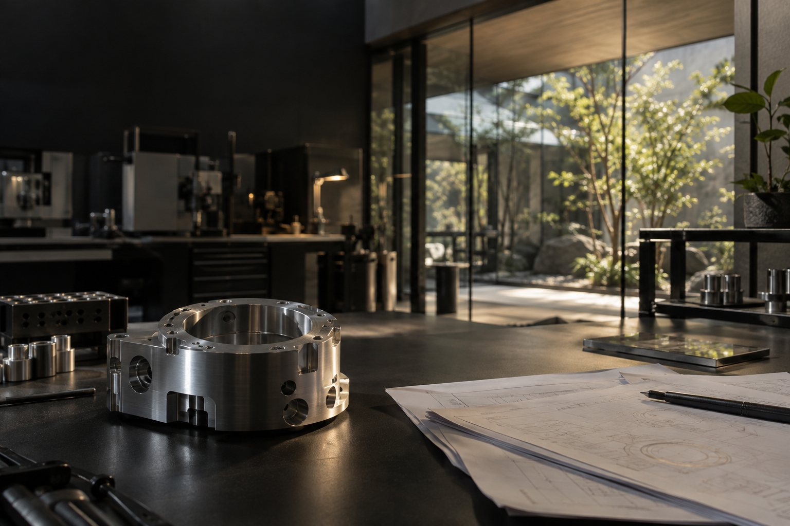

精密加工
最初に知っておきたい判断基準と、目的に合った選び方を整理します。
詳しく見る →
確かな技術を、必要とする人へ。事業の強みと相談までの道筋を整理し、ひとつひとつのページを丁寧につくります。
公開されている情報から、必要なテーマを見つけます。
具体的な条件や用途を整理し、比較・検討を進めます。
不明点をまとめ、担当者への相談につなげます。
いいえ。募集内容をもとにした架空の提案用モックです。
写真はすべてAI生成のイメージです。
実際の申し込みやデータ送信は行いません。
ページ幅に合わせてレイアウトが変わります。
下の更新プレビューで見出しの変更をお試しいただけます。
入力情報の保存や外部サービスへの接続は行いません。
ご相談の前に、気になるテーマや必要な情報を整理できます。
画面で操作を体験する ↗独自CMSへの組み込みを想定し、見出し・文章・分類を分けた構造です。CMSそのものとの接続は、仕様確認後の工程になります。
上のサービス切り替え、FAQ、更新プレビューが実際に動作します。スマートフォンでも同じ内容をご覧いただけます。
入力した見出しを、右のプレビューへ反映します。ページを再読込すると元に戻ります。
本ページは提案段階の仮構成です。実際の業種・原稿・素材・CMS仕様を確認して、必要な範囲と納品条件を定めます。